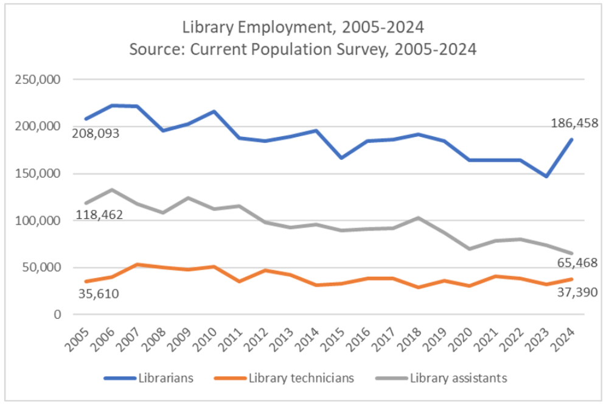
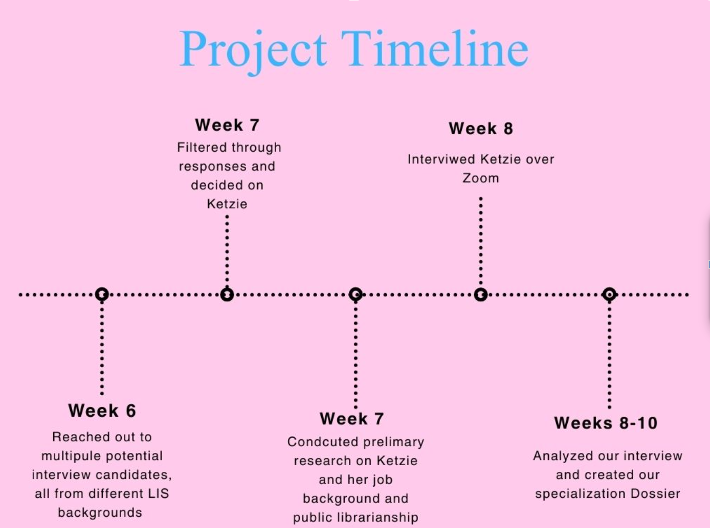
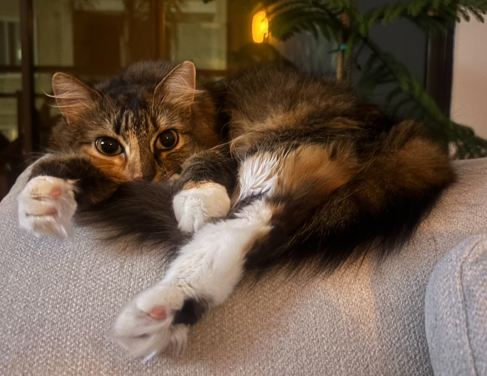
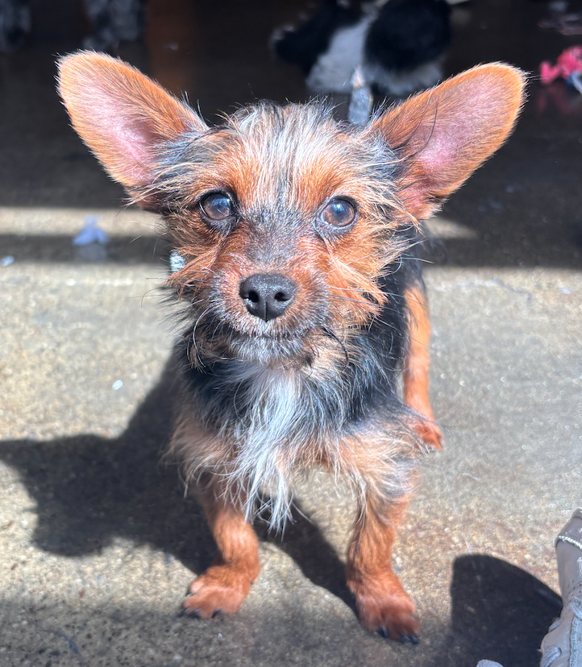

Come, Take a Look!
This is Our Specialization Dossier!
Aliya Gomaa, Amanda Clark, Emma Cameron, and Patricia Alvarado
IS 270 - Winter 2026
Overview
Section content goes here...
Typical Tasks
Section content goes here...
This is Our Specialization Dossier!
Aliya Gomaa, Amanda Clark, Emma Cameron, and Patricia Alvarado
IS 270 - Winter 2026
Section content goes here...
Section content goes here...
For our project we decided to interview Ketzie Diaz,the Circulation Manager at the Peninsula center branch of the Palos Verdes Library District (PVLD). Ketizie has been the circulation manager for this Library for about 12 years, In her role she is responsible for managing the 22 employees responsible for checking in/ checking out books, bookdrops, shelving, collecting holds, and assisting patrons sign up for library cards, additionally Ketize is also responsible for managing the integrated library system at the peninsula center, which is the database they use to keep track of all of patron accounts and library materials. Palos Verdes Library District is a Special Library District governed by a board of trustees located in Palos Verdes, California. PVLD has three library branches, located across the Palos Verdes Peninsula, these branches are Malaga Cove, Miraleste, and the Peninsula Center, our interviewee, Ketzie is the circulation manager at the Peninsula center which happens to be the main branch. The Palos Verdes Library District is formed in April 1928, The purpose of forming the special library district was to permit residents of unincorporated towns and villages to create for themselves an independent, locally controlled library district supported by property taxes and governed by a locally elected Board of Library Trustees responsive directly to the service needs of the community. From 1928 up until 1967 the Malaga cove library was the library located in Palos Verdes, California. In 1967 the Peninsula Center was completed, and has served the community from then until now. Currently the Peninsula center branch serves kids, teens, and adults through a wide variety of library materials and consistent programming. Some patron favorites at pvld are their wide video game selection, circulating telescopes, circulating camping gear, puzzles, weekly yoga, storytimes, and writers workshops.
Circulation Manager at PVLD Oversees a team of 22 people who:
Kenzie recieved her MLIS from San Jose State University and is a member of 3 professional organizations: ALA, CLA, and PLA.
For those interested in this position, Ketzie recommends taking courses in public service, information architecture, database management, and library management.
At PLVD Ketzie is at the managerial level, her Classification is Library Manager III, at PVLD the managerial level is the highest level a librarian can be unless they were to transition to an upper administrative role, at the Palos Verdes Library District would there are only two roles in upper admin, the director and deputy director.
Ketzie stated that she was happy in her role at PLVD and was not currently looking for a promotion to a higher classification level within the librarian category at pvld or any other library district. However she mentioned if she did want to she would have to look at another library district. Pay at PLVD is determined by job classification level and time served, so a non managing librarian who served longer than Ketizie could potentially make more than her.
When looking at other library districts, like LAPL or Torrance Public Library there are more classifications but all seem to end at a managerial level with responsibilities and pay equivalent or similar to Ketzie’s.
The role of a circulation manager is mostly a one person job made easier with the support of a team of library support staff. Jobs like Ketzie’s do not seem to be disappearing, but have remained available at a consistent rate. In terms of the job market outlook for public libraries and public librarianship in general, Ketzie feels like the field is growing not rapidly, but steadily, which matches up with the information from the U.S Bureau of Labor Statistics.
Ketzie also mentions that because of the more competitive salaries at PVLD once someone gets hired they stay until retirement, making librarian positions competitive at PVLD. She mentioned this may be different for other library districts with less competitive pay for entry level librarians.
Technical Skills
Most librarian positions require greater education and relevant work experience. The minimum education required for a circulation manager position is a four year bachelor’s degree and most require a master’s in library science from an American Library Association (ALA) accredited school. This is typically 1-3 years of specialized professional education. Ketzie recommends general courses on public services, cataloging, information architecture, database management, and library management.
Below are a few UCLA related graduate courses:
213. Current Issues in Librarianship
228. Assessment, Measurement, and Evaluation of Information Organizations and Services
233. Records and Information Resources Management
240. Management of Digital Records
245. Information Access
246. Information-Seeking Behavior
250. Techniques and Issues in Information Access
262A. Data Management and Practice
262B. Data Curation and Policy
274. Database Management Systems
410. Management Theory and Practice for Information Professionals
430. Library Collection Development
461. Descriptive Cataloging
462. Subject Cataloging and Classification
464. Metadata
She further explains that anyone who works in libraries should first work in circulation. While it is not part of any official requirement, it provides management staff a greater understanding of ground level library functions. Many job postings look for library experience in roles working with patrons to demonstrate communication and public service skills. Internships working in libraries and with metadata/cataloging would be beneficial.
The heart of library work is rooted in public services, so acting as a front-facing representative, is a crucial part of the role. The ALA explains that it is important for library managers to work towards meeting patron and community needs. This involves the ability to exercise judgment, maintain high digital literacy, create library programming, utilize high communication skills, and effectively administratively manage projects and teams. Ketzie recommends gaining experience working with databases, catalogs, digital services, and public services. As a circulation manager, she learned institution specific skills and techniques on the job to fulfill many duties. She mentioned that her master’s in library and information science taught her general information, but her applied knowledge was learned in practice.
Some emerging demands include the new discussions surrounding AI use in and around libraries. Specifically, Palos Verdes Peninsula Library has noticed some recent issues regarding AI use with patrons and with vendors. They have created a small task force to investigate its use and create a new policy regarding A.I. in the library. Currently, there is no mention of A.I. in its policy and procedures, leaving patrons and staff unclear on their position. This is similar to other public libraries, as its presence has grown in popularity, but its application and understanding is underdeveloped in the public library world.
The American Library Association recognizes A.I. both as an underdeveloped weapon and potential tool. First outlining its potential dangers to the data world in general, integrating knowledge from unreputable sources and reiterating harmful, offensive rhetoric as just a few examples. This still developing technology is integrating into many aspects of society and as libraries are centers of culture and knowledge, they need to create a mechanism to work within this changing technical world. One direct and growing threat to library workers are the potential job losses to A.I. technologies. Specifically, many entry level positions, such as data entry and digital organization, may be absorbed by A.I. creating “a new vacuum in middle level management” effectively shrinking the information science job market (ALA). Conversely, A.I. use can become a constructive and effective method of digitally organizing by integrating into information databases.
There is also great potential behind accessing collection’s online metadata. By integrating A.I. into online catalogs, users could gain greater access to vast collection materials, both via search engine capabilities and through easier identification tools.
For example, the ALA explains that LifeTag
is a google project that creates identifying tags (or markers) for life magazine photos by terms. As a circulation manager, Ketzie rarely uses A.I. currently, but with its growing popularity and implications it is important to recognise its potential effects in all aspects of the library.
Library Professionals: 2025 Trends

The ALA noticed a small increase in employment rates within the library world. According to the
AFL-CIO Department for Professional Employees,
librarian positions increased by more than 27% while library assistants and technicians declined or remained steady.
Challenges in Library Working Conditions:
Vocational Awe - “a set of ideals, values and assumptions librarians have about themselves that result in the notion that libraries as institutions are inherently good, sacred and therefore beyond critique.” - Fobazi Ettarh, Vocational Awe and Librarianship: The Lies We Tell Ourselves (2018)
Information service professionals work to provide a public service for the greater good and are made to neglect their own needs, settling for less than ideal working conditions. Vocational awe can lead to patterns of being systematically overworked and undercompensated. These conditions can lead to professional burnout. This is heavily dependent on each institution and its available resources. Many institutions themselves are underfunded which trickles down to not being able to afford the appropriate amount of staff or resources. This pattern can be clearly observed in entry level information professional internships. Many of which have a competitive application process and require copious hours of work (10 - 35 hours a week) in person or online. These positions are often unpaid or at minimum wage.
As Ettarh says “You can’t eat on passion. You can’t pay rent on passion. Passion, devotion and awe are not sustainable sources of income.” Information service professionals need to recognize that their own human needs should not be overlooked as a sacrifice for their work. It is important to challenge structural platitudes that depend on employee passion to overlook “expanding” work roles. To combat vocational awe institutions should look towards reframing work environments towards employees’ well-being. This involves reframing conversations to create healthy boundaries to “push back against unsustainable workloads and/or expectations” (Koziura and Tureen). By recognizing vocational awe and its consequences supervisors can work with staff to reevaluate their work culture and responsibilities. Effective communication and recognition is the beginning of the conversation towards reducing and eliminating the harmful effects of vocational awe within the information science field.
Additionally, the profession has been observed to maintain “a persistent lack of racial and ethnic diversity” for the past two decades (AFLC-CIO Department for Professional Employees). This lack of diversity and inclusion is also demonstrated in LIS curriculum which does not apply this focus to many class agendas, further disenfranchising minority communities. Diversity and inclusion should be at the center of information science education, to ensure equitable practices that make GLAM institutions welcoming community based centers of learning.
270 Final Presentation by Aliya Gomaa
Ketzie asked for us not to share the transcript & recording of her interview; however, we've created a timeline to illustrate our process as well as a sampling of the questions we asked Ketzie.

Interview Questions:American Library Association. “Artificial Intelligence.” Accessed March 14, 2026. https://www.ala.org/future/trends/artificialintelligence.
American Library Association. “What You Need to Become a Library Manager.” Accessed March 14, 2026. https://www.ala.org/educationcareers/careers/librarycareerssite/whatyouneedlibrarymgr.
Bureau of Labor Statistics, U.S. Department of Labor. “Librarians and Library Media Specialists.” Occupational Outlook Handbook. Last modified August 28, 2025. https://www.bls.gov/ooh/education-training-and-library/librarians.htm .
The Bureau of Labor Statistics, U.S. Department of Labor website provides information on labor statistics, trends and data for a variety of careers and occupations. For our project, we specifically looked at the section about Librarians and Library Media Specialists. This section explains what librarians and library media specialists do, how to become one, their work environment, typical pay, and the job outlook for the profession. It also includes a list of similar jobs as well as state and area data. This website was helpful pre-interview as it provided a thorough introduction to Ketzie’s field. We also found it useful during post-interview analysis because it provided statistical data that allowed us to compare Ketzie’s statements with national labor trends. This is an excellent and comprehensive resource for students who are interested in librarianship.
Department for Professional Employees, AFL-CIO. “Library Professionals: Facts and Figures.” Accessed March 14, 2026. https://www.dpeaflcio.org/factsheets/library-professionals-facts-and-figures.
Eden, Bradford Lee. “Generative AI and Libraries: Claiming Our Place in the Center of a Shared Future: Michael Hanegan and Chris Rosser, ALA Editions in Collaboration with Core, 2025, Xvi+144 Pp., $54.99 (Paperback), ISBN-13 979-8-89255-310-0.” Public Services Quarterly, December 2025, 1–2. https://doi.org/10.1080/15228959.2026.2600723.
Ettarh, Fobazi. “Vocational Awe and Librarianship: The Lies We Tell Ourselves.” In the Library with the Lead Pipe, January 10, 2018. https://www.inthelibrarywiththeleadpipe.org/2018/vocational-awe/ .
This article by librarian Fobazi Ettarh introduces the concept of vocational awe, the idea that because libraries are viewed as inherently good institutions, those who work there must be noble individuals motivated by the greater good. As a result, library workers may feel pressure to accept being overworked and underpaid. This article helped us analyze labor trends in public libraries by providing a conceptual framework that explains why issues such as burnout and low retention rates may exist in library work.
Ford, Anne. “The Library Employment Landscape.” American Libraries 52, no. 5 (2021): 34–37. https://www.jstor.org/stable/27110269 .
This article by American Libraries editor Anne Ford details how the COVID-19 pandemic negatively affected the job market for those looking for entry-level library positions. Through personal anecdotes and testimonies of LIS professionals, the article shows how the pandemic cut hiring in half, halted internship opportunities for MLIS students, and forced many job seekers to relocate or leave the LIS field entirely. This article provided a fuller perspective on the current difficulties of librarianship and LIS work, a perspective we did not fully receive from our interview with Ketzie since she has been a manager for twelve years and entered the profession earlier. For these same reasons, this article would be informative for MLIS students and early LIS professionals.
Google Arts & Culture Lab. “Life Tags.” Accessed March 14, 2026. https://artsexperiments.withgoogle.com/lifetags/.
Jaeger, Paul T. “Diversity, Inclusion, and Library and Information Science: An Ongoing Imperative (or Why We Still Desperately Need to Have Discussions about Diversity and Inclusion).” Library Quarterly 85, no. 2 (2015): 127–132. https://www.jstor.org/stable/10.1086/680151.
Koziura, Amanda, and Amy Tureen. “Disrupting Vocational Awe: Strategies for Supervisors to Identify, Counter, and Prevent Unsustainable Workloads and Unreasonable Expectations.” In Person-Centered Management in Academic Libraries, edited by Dani Brecher Cook, Maoria J. Kirker, and Diann Smothers, 131–140. Chicago: ALA Editions, 2024.
This book chapter examines the concept of vocational awe in academic libraries and focuses on supervisors and managers. The authors argue that librarians in leadership roles can make structural changes within their departments and institutions that address the poor working conditions caused by vocational awe. The chapter includes practical strategies supervisors can implement to improve workplace conditions. This source was particularly helpful because it focuses on librarians in managerial roles similar to Ketzie’s position. Although it is primarily aimed at supervisors rather than LIS students, it still provides useful insight for students entering the workforce who may eventually move into leadership roles.
Palos Verdes Library District. “Circulation Department Manager.” Accessed March 14, 2026. https://www.pvld.org/jobs/circulation/circulationdepartmentmanager .
This website is the Palos Verdes Library District’s Human Resources page. We examined the job description for the circulation manager position, which is Ketzie’s current role. The page includes information about the purpose of a circulation manager and descriptions of essential duties such as management and leadership, customer service, circulation operations, and administrative support. It also outlines required qualifications including education, knowledge, and abilities, as well as sections describing physical demands, environmental elements, and working conditions. This source was extremely helpful in the pre-interview research stage because it provides a comprehensive view of Ketzie’s position within her institution. It would also be useful for students interested in public librarianship because similar job descriptions for other library positions are available on the site.
A little bit about us and our contributions to this website. Obviously we are humans, but these animals sure are cute.

